Do sprzedania oferuję mieszkanie na Warszawskim Targówku/Elsnerów - nowe osiedle Wilno. Mieszkanie jest na 3 (ostatnim) piętrze od strony wschodnio-południowej z 3 oddzielnymi pokojami i oddzielną (możliwą do połączenia) kuchnią.
Dodatkowo oddzielne łazienka i garderoba (lub druga łazienka/pralnia).
Mieszkanie o pow. 68,35 m² w apartamentowcu z 2018 roku.
Mieszkanie jest w stanie deweloperskim, do dowolnej aranżacji i wykończenia. Umożliwia np. wynajem 3 oddzielnych, zamykanych pokoji, lub otwarcia salonu poprzez połączenia z kuchnią i korytarzem, plus dwa oddzielne pokoje/sypialnie. Można urządzić drugą łazienkę, lub pralnię/garderobę.
Budynek/osiedle zaprojektowane i wybudowane przez Dom Development. Inne mieszkania już wykończone - więc jest cicho.
W każdym pokoju i kuchni duże okna. Dodatkowo duży balkon/loggia w salonie.
Tuż obok plac zabaw dla dzieci.
W okolicy liczne sklepy, punkty usługowe, bary i restauracje.
Dobra komunikacja - blisko przystanek autobusowy (pętla) oraz stacja kolejki (jedna stacja do Dworca Wileńskego - dalej np. metro/tramwaj).
Stan prawny uregulowany - księga wieczysta - możliwość kredytownia/hipoteki.
Dodatkowo miejsce garażowe (dodatkowo płatne 45 000 PLN)
Brak zadłużenia i lokatorów. Mieszkanie puste, przygotowane do sprzedaży.
MIESZKANIE SKŁADA SIĘ Z:
- salonu 17,94 m2
- kuchni 9,25 m2
- sypialni 12,24 m2
- sypialni 10,17 m2
- łazienki 4,35 m2
- wc/garderoby 2,82 m2
- przedpokoju 8,59 m2
BALKON:
dostępny jest duży balkon typu loggia 5,90 m2
GARAŻ:
do lokalu przynależy miejsce parkingowe w garażu podziemnym (płatne dodatkowo + 45 tys. zł, zakup obligatoryjny)
POMIESZCZENIE GOSPODARCZE:
Do mieszkania nie przynależy komórka lokatorska
Do dyspozycji mieszkańców jest rowerownia i wózkownia w garażu podziemnym.
OSIEDLE I BUDYNEK:
Wyjątkowo ładne, estetyczne i zadbane osiedle/małe miasteczko z licznymi restauracjami, kawiarniami, sklepikami i alejkami spacerowymi
- wejście do klatek zabezpieczone domofonem, monitoring, ochrona, teren ogrodzony
- budynek 3-piętrowy
- niska zabudowa osiedla i jasne elewacje
- piękny teren zielony
- place zabaw
- dobra komunikacja
- renomowany deweloper: Dom Development
Zapraszam do kontaktu bezpośredniego (bez dodatkowych prowizji).
(Pośrednikom dziękuję, NIE JESTEM zainteresowany współpracą - nawet w ramach otwartych umów).
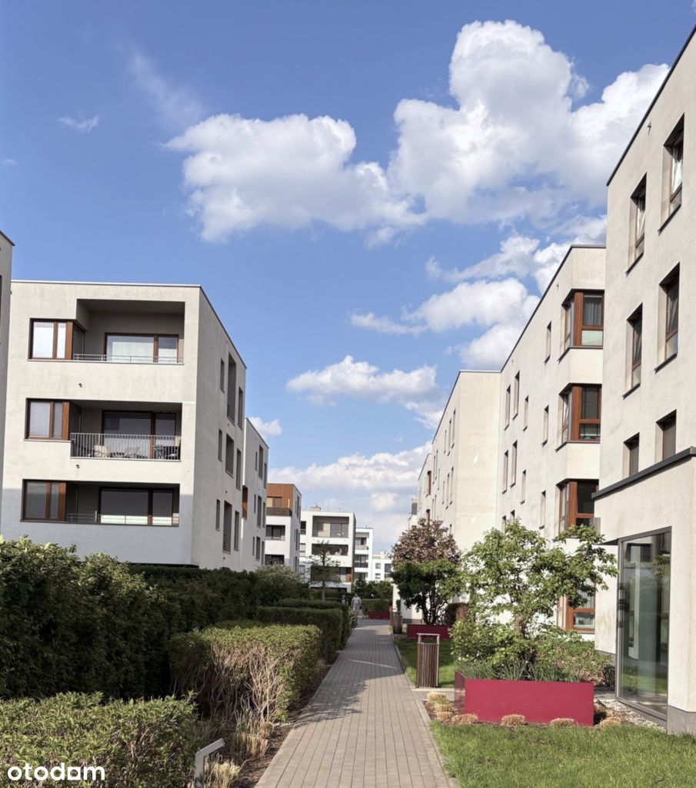
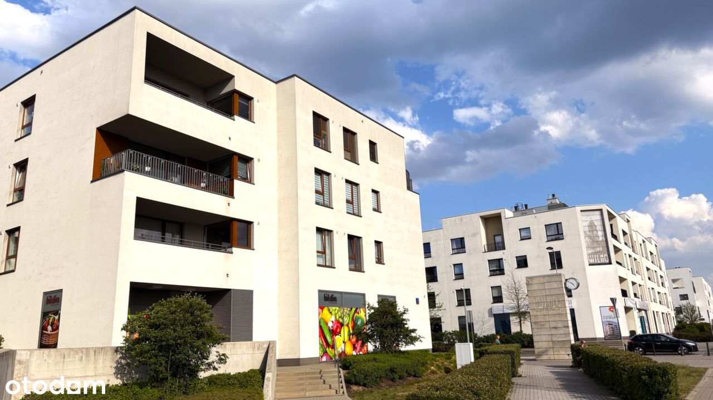
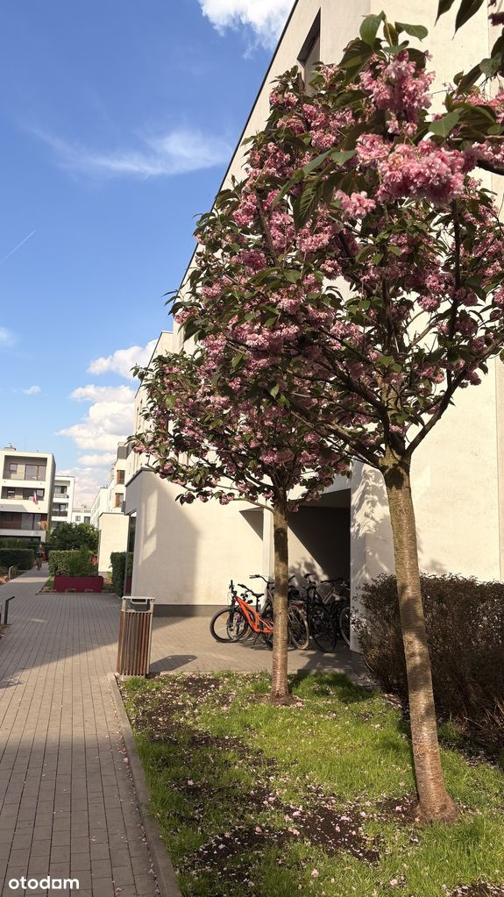
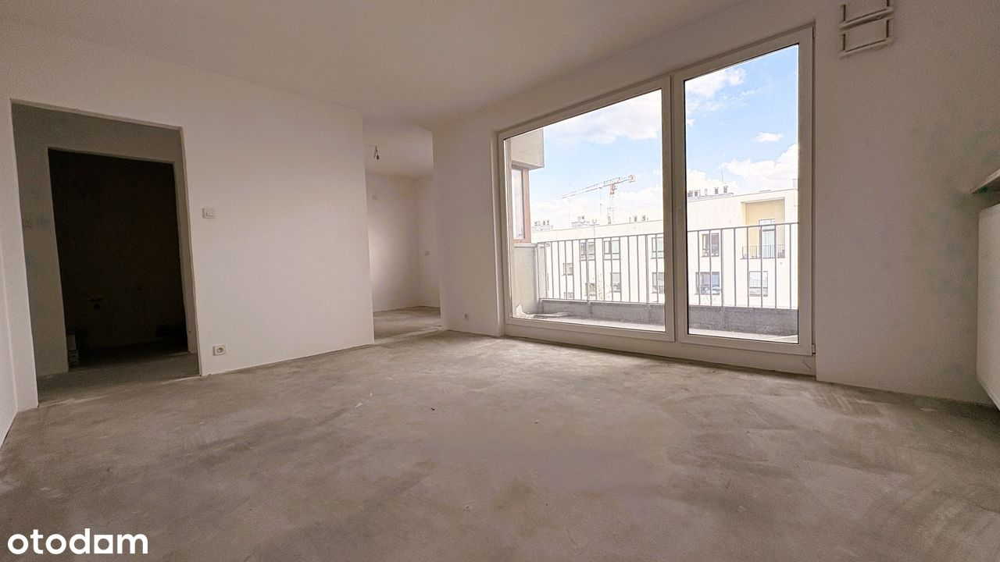
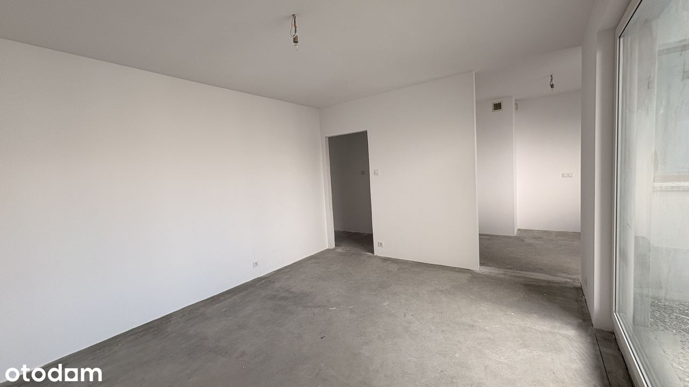
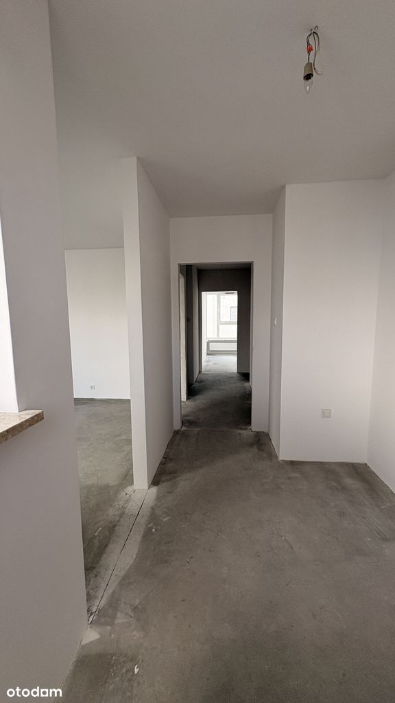
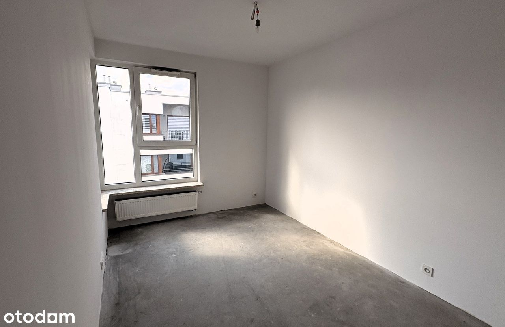
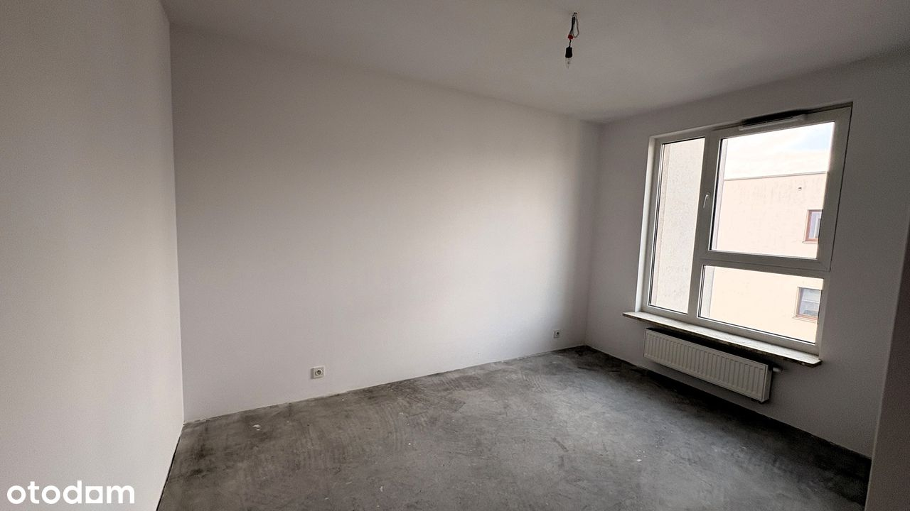
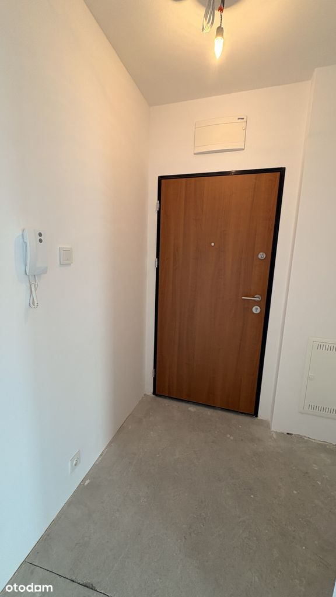
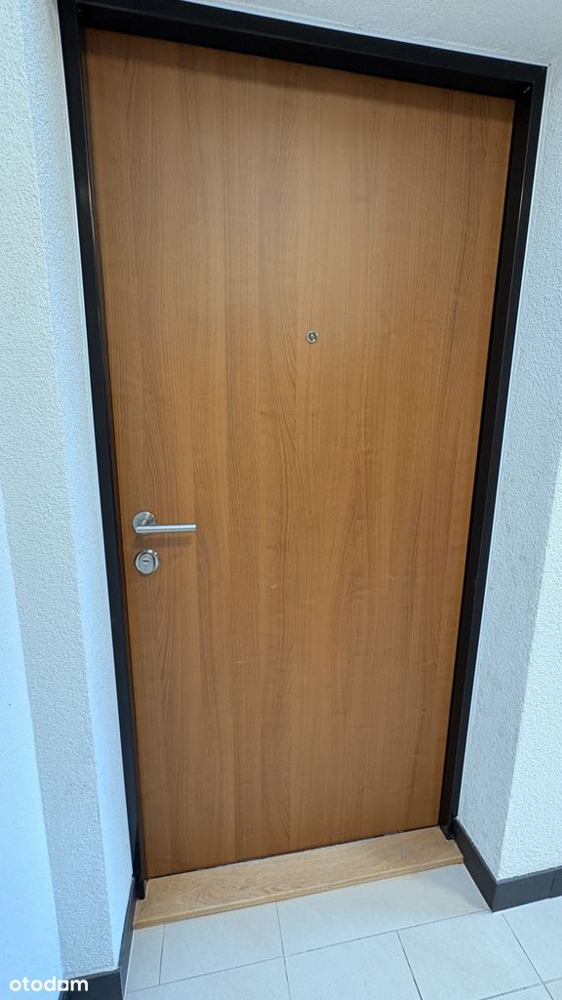
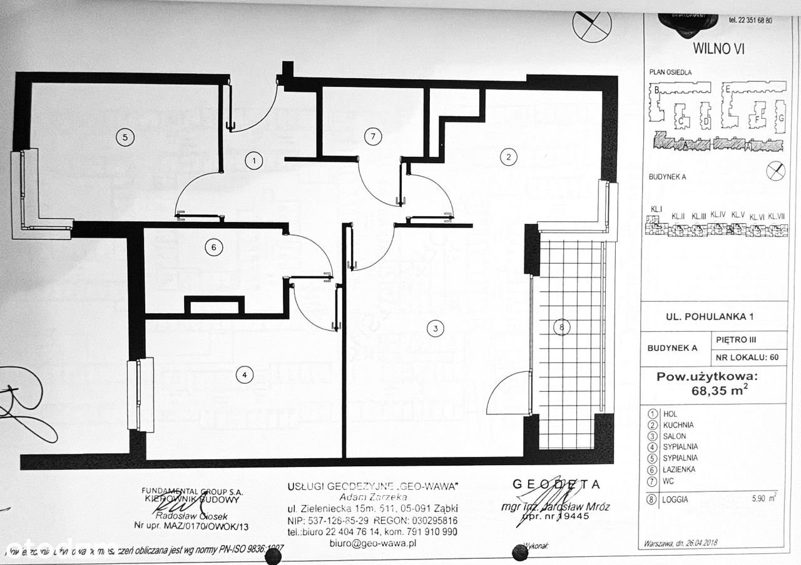